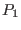

Denote the strength of the equilibrium magnetic field at the magnetic axis by
, the mass density at the magnetic axis by  , and the major radius
of the magnetic axis by . Define a characteristic speed
, which is the Alfvén speed at the magnetic
axis. Using the Alfvén speed, we define a characteristic frequency
. Multiplying the matrix equation (134)
by
gives
, and the major radius
of the magnetic axis by . Define a characteristic speed
, which is the Alfvén speed at the magnetic
axis. Using the Alfvén speed, we define a characteristic frequency
. Multiplying the matrix equation (134)
by
gives
with new quantities defined as follows:
,
,
,
,
,
, and
. Using the equations (135),
(136), (140), (137), (138), and
(142), the expression of
,
,
,
,
, and
are written respectively as
where
,
,
. Next, consider
re-normalizing the matrix equation (145). Multiply the first equation
of matrix equation (145) by
, giving
with the new matrix elements defined as follows:
,
, and
. (Note that, although the second equation of
matrix equation (161) uses
, instead of , as a
variable , it is actually identical with the second equation of matrix
equation (145) because the
term is multiplied by
zero.) Using Eqs. (147), (148) (149) , we obtain
Note that, after the normalization, all the coefficients of the resulting
equations are of the order , thus, are suitable for accurate numerical
calculation. Also note that, for typical tokamak plasmas, the normalization
factor
is of the order , which is six order
away from . Therefore the normalization performed here is necessary for
accurate numerical calculation. [If the normalizing factor is two (or less)
order from , then, from my experience, it is usually not necessary to
perform additional normalization for the purpose of optimizing the numerical
accuracy, i.e., the original units system has provided a reasonable
normalization. Of course, suitable re-normalization will be of benefit to
developing a clear physical insight into the problem in question.]
yj
2015-09-04